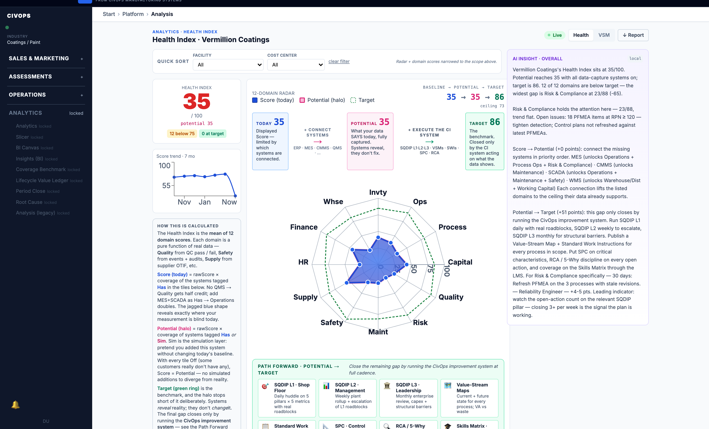

Prepared for
Nissan Smyrna senior management & maintenance leadership
Nissan Smyrna senior management & maintenance leadership
A leadership-ready concept site built to answer one question clearly: how does Nissan Smyrna move from fragmented maintenance signals to a cleaner operating model, a stronger data backbone, and faster problem resolution on the plant floor?
Senior management and maintenance leadership do not need to approve a giant replacement program. They need to choose a practical path that improves troubleshooting, creates cleaner operational data, and sets up the next wave of analytics and AI.
Retain CIMPLICITY and the existing control layer as the plant-floor truth source. Avoid destabilizing the operations backbone.
Insert historian + context + event modeling so Nissan has one reusable operational language rather than several isolated databases.
Build a single maintenance cockpit for live alerts, guided troubleshooting, escalation, and closure — not another disconnected dashboard.
Make the choice easy to follow. Show the path, the tradeoffs, and what each level unlocks for maintenance performance and enterprise learning.
This is the cleanest way to explain data management and interoperability: use SM Profiles as the common language for data-in-context, and i3X as the open interaction model for how systems share it.
Every line, station, robot, vision unit, and utility asset gets one durable, human-readable identity.
Faults, alarms, downtime events, and predictive warnings are captured once and reused everywhere.
The centerpoint for Nissan's plant data management: common semantics, portable context, and open interoperability between existing systems, future apps, and enterprise analytics.
Transport vs. meaning: a UNS / MQTT broker moves data — pub/sub, discoverable, hub-and-spoke instead of point-to-point. SM Profiles + i3X give that data meaning and governance: one asset and event model, with ownership and lineage built in. They are complementary — the broker carries what the model defines, so a Unified Namespace and this model reinforce each other rather than compete.
Responses use common codes, evidence, and close-out logic so the plant learns from every intervention.
Contextualized manufacturing events flow cleanly into whatever cloud data platform Nissan chooses instead of being trapped in local islands.
This is not a competing island. It is the execution beachhead for Nissan's plant-to-enterprise data direction — the same open asset and event model, proven running on one area before it scales across the plant and the fleet.
One open asset and event model, governed data flowing cleanly to whatever enterprise analytics platform Nissan chooses — the direction plant-to-enterprise data is already heading.
One area, running, de-risks the plant-wide and Americas-wide rollout. The hardest part of any data program is holding the model together as it grows — this proves it can, on real equipment, before the big commitment.
CIMPLICITY, Kepware, and FAULT stay. The value is the missing middle — context and one event record — not a rip-and-replace backbone.
The assessment runs on the civops platform: a maturity instrument with the CESMII Smart Manufacturing model built in. It scores operating dimensions today against their potential and a target, then turns the gaps into a prioritized improvement path — the same engine that produces the roadmap on the Journey page.

The objective is not novelty. It is to borrow the strongest operating patterns from world-class plants and remote operations environments, then translate them for Nissan Smyrna.
Central watch desk, fleet-style visibility, standard playbooks, and shared escalation are what make complex assets manageable at speed.
High-speed time-series and alarm/event data belong in infrastructure built for OT retrieval, compression, and trending.
Best-in-class plants embed SOPs, issue capture, and tacit knowledge directly into the front-line workflow.
Plants that normalize context before pushing data upward make future tool choices easier and reduce integration regret.
The path should move from clarity to proof to scale — not from concept directly to enterprise complexity, and not from assessment to more assessment. The near-term goal is a working pilot on real equipment, on the plant floor.
Validate systems, data owners, naming conventions, and the first viable event model.
Use the paint shop example to prove live fault capture, guided troubleshooting, and cross-role collaboration.
Launch a role-based maintenance command experience with historian, context, and shared escalation.
Expand across plant areas and feed curated events to analytics, AI, and fleet learning.